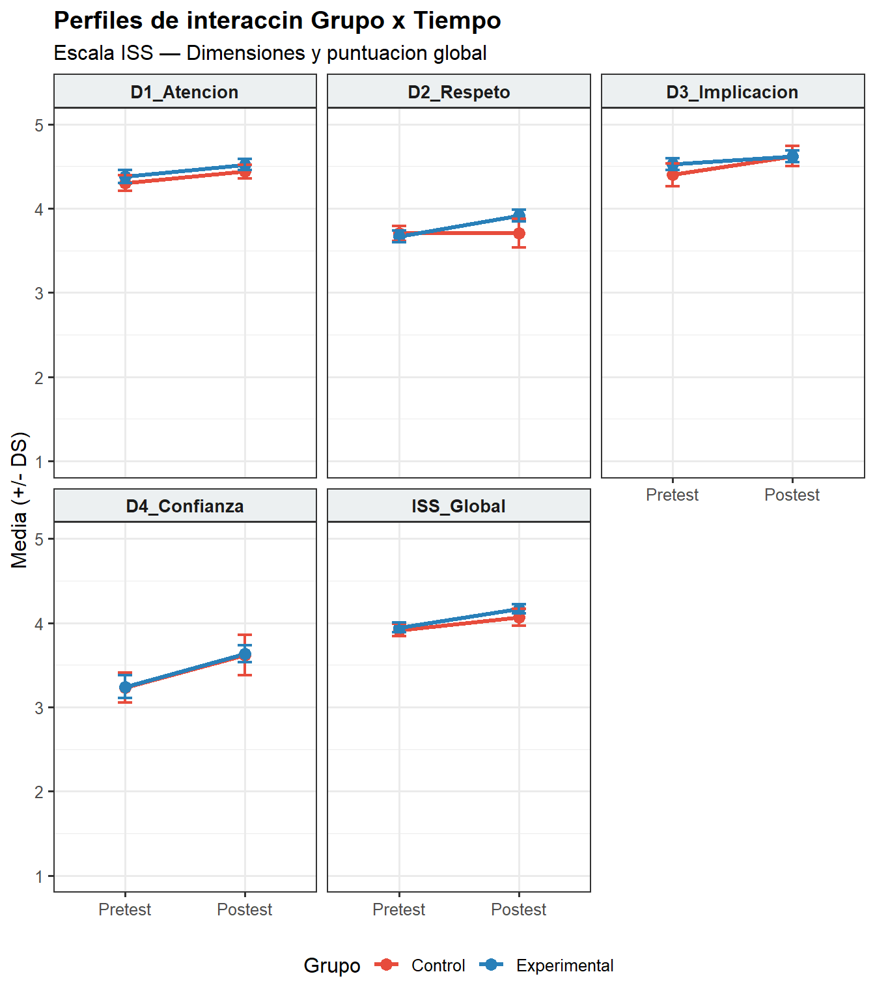

Capítulo 5 Análisis cuantitativo de sensibilidad intercultural
Realizaremos un análisis exploratorio con las dimensiones según pretest y postest usando la comparación de grupo experimental y control.
5.1 Análisis exploratorio pretest postest
| Dimension | Grupo | Tiempo | n | M | DE | Mediana | Min | Max | Cambio | Cambio % |
|---|---|---|---|---|---|---|---|---|---|---|
| D1_Atencion | Control | Pretest | 15 | 4.305 | 0.362 | 4.286 | 3.714 | 4.857 | 0.133 | 3.1 |
| Postest | 15 | 4.438 | 0.308 | 4.571 | 3.857 | 4.857 | 0.133 | 3.1 | ||
| Experimental | Pretest | 28 | 4.378 | 0.417 | 4.429 | 3.143 | 5.000 | 0.142 | 3.2 | |
| Postest | 28 | 4.520 | 0.355 | 4.571 | 3.571 | 5.000 | 0.142 | 3.2 | ||
| D2_Respeto | Control | Pretest | 15 | 3.705 | 0.339 | 3.714 | 3.000 | 4.143 | 0.000 | 0.0 |
| Postest | 15 | 3.705 | 0.656 | 3.857 | 2.000 | 4.429 | 0.000 | 0.0 | ||
| Experimental | Pretest | 28 | 3.668 | 0.367 | 3.714 | 2.857 | 4.571 | 0.245 | 6.7 | |
| Postest | 28 | 3.913 | 0.365 | 3.857 | 3.143 | 4.571 | 0.245 | 6.7 | ||
| D3_Implicacion | Control | Pretest | 15 | 4.400 | 0.523 | 4.333 | 3.333 | 5.000 | 0.222 | 5.0 |
| Postest | 15 | 4.622 | 0.452 | 4.667 | 3.667 | 5.000 | 0.222 | 5.0 | ||
| Experimental | Pretest | 28 | 4.524 | 0.368 | 4.667 | 3.667 | 5.000 | 0.095 | 2.1 | |
| Postest | 28 | 4.619 | 0.371 | 4.667 | 3.667 | 5.000 | 0.095 | 2.1 | ||
| D4_Confianza | Control | Pretest | 15 | 3.233 | 0.691 | 3.000 | 1.750 | 4.500 | 0.384 | 11.9 |
| Postest | 15 | 3.617 | 0.940 | 3.750 | 1.750 | 5.000 | 0.384 | 11.9 | ||
| Experimental | Pretest | 28 | 3.241 | 0.709 | 3.250 | 1.750 | 4.500 | 0.393 | 12.1 | |
| Postest | 28 | 3.634 | 0.534 | 3.750 | 2.250 | 4.500 | 0.393 | 12.1 | ||
| ISS_Global | Control | Pretest | 15 | 3.914 | 0.296 | 3.905 | 3.381 | 4.333 | 0.149 | 3.8 |
| Postest | 15 | 4.063 | 0.388 | 4.143 | 3.333 | 4.667 | 0.149 | 3.8 | ||
| Experimental | Pretest | 28 | 3.946 | 0.324 | 4.000 | 3.143 | 4.476 | 0.217 | 5.5 | |
| Postest | 28 | 4.163 | 0.289 | 4.262 | 3.667 | 4.667 | 0.217 | 5.5 | ||
| Nota. M = Media; DE = Desviacion estandar; Cambio = Postest − Pretest; Cambio % = porcentaje de cambio relativo al pretest. |
La Tabla 3.1 presenta los estadísticos descriptivos de las cuatro dimensiones de la Sensibilidad Intercultural (Atención, Respeto, Implicación y Confianza) y de la puntuación global del ISS, diferenciados por grupo (Control y Experimental) y momento de medición (Pretest y Postest). En términos generales, ambos grupos mostraron incrementos en las puntuaciones medias tras la intervención, aunque la magnitud y consistencia de dichos cambios varió según la dimensión, sin un patrón uniforme a favor del grupo experimental en todos los casos.
En Atención (D1), ambos grupos partieron de niveles ya elevados y mostraron incrementos modestos y prácticamente equivalentes: el grupo Control pasó de 4.305 (DE=0.362) a 4.438 (DE=0.308) (+3.1%), y el grupo Experimental de 4.378 (DE=0.417) a 4.520 (DE=0.355) (+3.2%). No se observa, en esta dimensión, una diferencia apreciable entre grupos.
En Respeto (D2), el grupo Control no mostró cambio en su media (M=3.705 en ambos momentos, 0.0%), aunque sí un notable aumento en su dispersión (DE de 0.339 a 0.656), lo que sugiere una mayor heterogeneidad de respuestas dentro del grupo tras la intervención, posiblemente asociada a casos individuales atípicos. El grupo Experimental, en cambio, aumentó de 3.668 (DE=0.367) a 3.913 (DE=0.365) (+6.7%), siendo esta la dimensión con la diferencia más clara a favor del grupo experimental.
En Implicación (D3), el patrón fue inverso al esperado: el grupo Control mostró el mayor incremento relativo, pasando de 4.400 (DE=0.523) a 4.622 (DE=0.452) (+5.0%), mientras que el grupo Experimental avanzó en menor magnitud, de 4.524 (DE=0.368) a 4.619 (DE=0.371) (+2.1%). Este resultado no respalda un efecto diferencial de la intervención en esta dimensión específica y debe reportarse sin sobreinterpretar la narrativa general de mejora asociada al grupo experimental.
En Confianza (D4), ambos grupos experimentaron el mayor incremento relativo de las cuatro dimensiones, con magnitudes muy similares entre sí: el grupo Control pasó de 3.233 (DE=0.691) a 3.617 (DE=0.940) (+11.9%), y el grupo Experimental de 3.241 (DE=0.709) a 3.634 (DE=0.534) (+12.1%). La ausencia de diferencia apreciable entre grupos en esta dimensión, pese a ser la de mayor cambio absoluto, sugiere un efecto de maduración o familiarización común a ambos grupos más que un efecto específico de la intervención.
Finalmente, en la puntuación global (ISS_Global), ambos grupos mejoraron tras el postest, con una magnitud relativa mayor en el grupo Experimental: el grupo Control pasó de 3.914 (DE=0.296) a 4.063 (DE=0.388) (+3.8%), mientras que el grupo Experimental aumentó de 3.946 (DE=0.324) a 4.163 (DE=0.289) (+5.5%).
En conjunto, estos resultados descriptivos no permiten afirmar un efecto uniforme y consistente de la intervención sobre las cuatro dimensiones: mientras que Respeto y la puntuación global muestran una ventaja descriptiva a favor del grupo Experimental, Implicación exhibe el patrón contrario, y Atención y Confianza no muestran diferencias apreciables entre grupos. Estas diferencias descriptivas deben confirmarse mediante una prueba formal de interacción Grupo × Tiempo (por ejemplo, ANOVA mixto o modelo de efectos mixtos) antes de atribuir cualquier cambio específicamente al efecto de la intervención, dado que las magnitudes observadas se solapan considerablemente al considerar las desviaciones estándar de cada grupo.

Figura 5.1: Perfiles de interacción Grupo × Tiempo para cada dimensión del ISS. Las barras de error representan ±1 EE.
El gráfico de perfiles Grupo x Tiempo permite visualizar el patrón de cambio en cada dimensión. Únicamente en Respeto se observa una divergencia clara entre grupos: mientras el grupo Control mantuvo una media estable entre momentos (M=3.705 en ambos), el grupo Experimental mostró un incremento sostenido (de 3.668 a 3.913), sugiriendo un posible efecto específico de la intervención en esta dimensión. En las restantes dimensiones (Atención, Implicación, Confianza) y en la puntuación global, las trayectorias de ambos grupos resultaron prácticamente paralelas, lo que es más compatible con un efecto general de tiempo (familiarización con el instrumento o maduración) que con un efecto diferencial atribuible a la intervención. Esta interpretación visual debe confirmarse mediante una prueba formal de interacción Grupo × Tiempo antes de establecer conclusiones definitivas sobre la efectividad diferencial del programa.